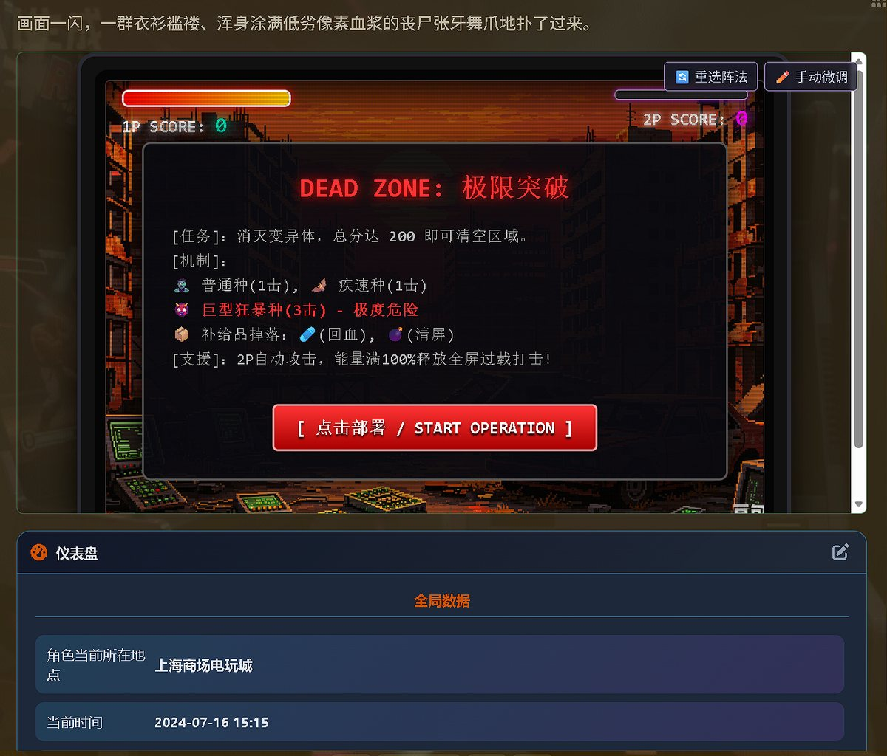
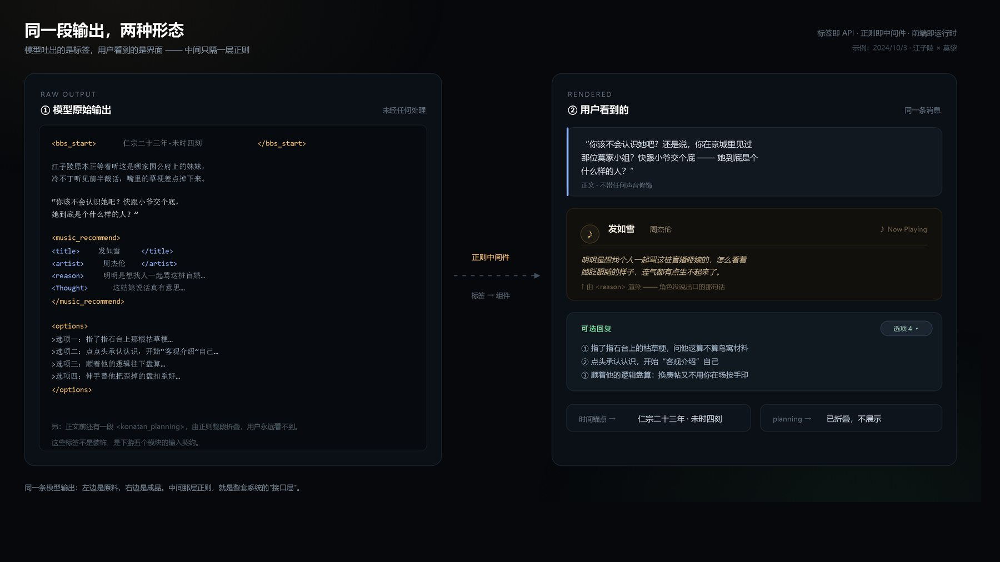
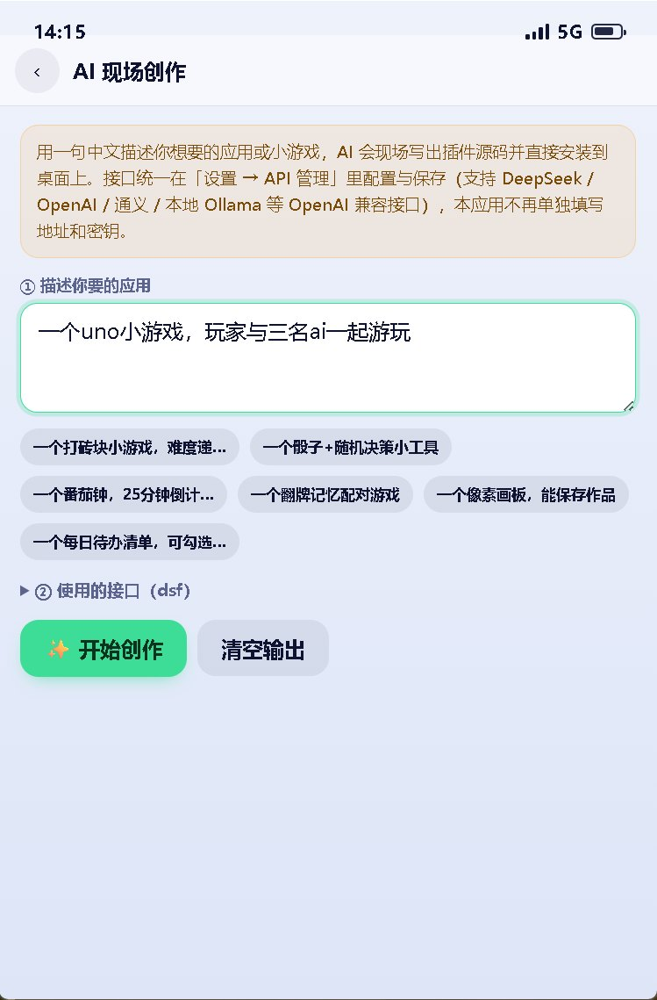
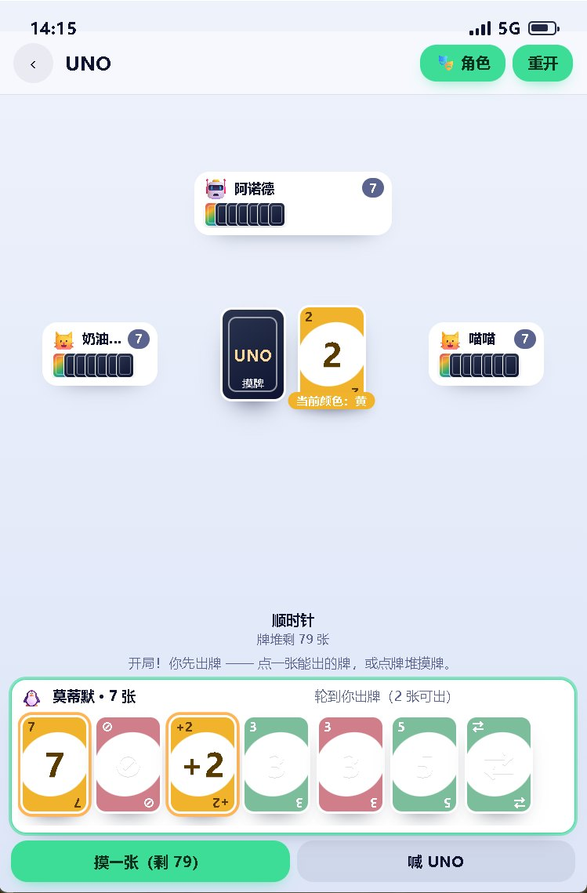
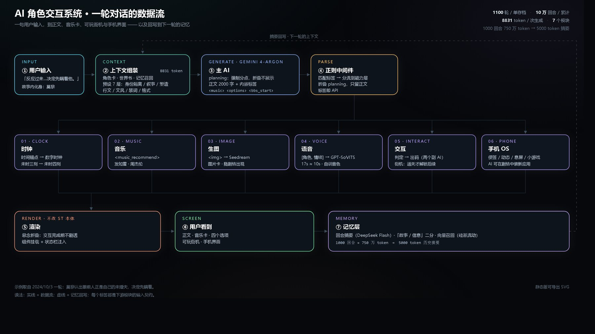

SillyTavern 让模型写出文字。我加了一层运行时，让这些文字变成能执行、能点击、能播放的东西。

SillyTavern 本质上是一套提示词系统：预设结构决定发什么，模型返回文字，仅此而已。它能写得很动人，但用户看到的永远只有一行字。
角色说「我给你调了杯酒」，屏幕上还是那行字。沉浸感断裂。
时间、天气、随身物品、手机界面都不存在。角色活在真空里。
上下文一长就遗忘、人设漂移、token 爆炸。长线剧情跑不动。

左边是模型吐的原文，右边是用户看到的界面。中间那层正则，就是整个系统的接口层。
提示词层的输出格式，就是这套系统的 API 契约。改一个字，下游就崩——所以它必须像接口一样被设计，而不是像文章一样被写。
文字 → 可玩关卡 → 叙事门禁。正文里出现一台真能打的街机，2P 协战，必须通关才解锁后续剧情。
关键设计是悬念折叠：交互触发前，标签之后的正文先被折叠；用户完成动作，才展开。


「一个 UNO 小游戏，玩家与三名 AI 一起游玩」→ AI 现场写出插件源码 → 直接装到桌面 → 开局可玩。
这不只是「AI 能调用工具」，是 AI 能扩展界面本身。

为什么是三个 AI：主 AI 只写正文，追求文字质量；副 AI-1 判断哪段描写该变交互；副 AI-2 只生成前端代码。拆开是因为「写得好」和「判断哪里该交互」两个目标会互相打架。
AI 不需要会写代码，只要在正确的位置吐出正确格式的标签；正则层是解析器，把自然语言里的指令翻译成系统调用；前端是运行时，把系统调用的结果渲染成用户能看见、能点的东西。